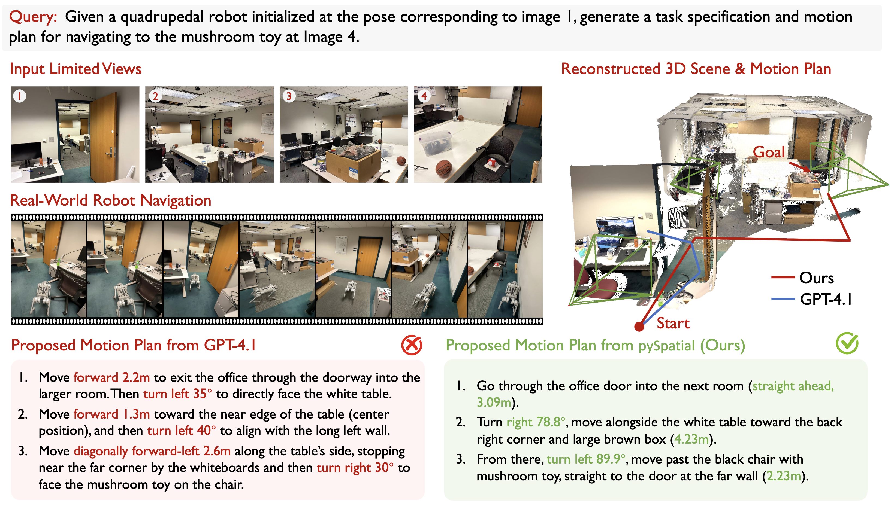

|
Zhanpeng Luo
I'm a senior undergraduate student majoring computer science at the University of Pittsburgh.
I will join the Johns Hopkins University as a PhD student in 26 Fall. I feel fortunate to be supervised by Jaemin Cho.
Things I would like to research on the next stage:
|
Publications |
|

|
pySpatial: Generating 3D Visual Programs for Zero-Shot Spatial Reasoning
Zhanpeng Luo, Ce Zhang, Silong Yong, Cunxi Dai, Qianwei Wang, Haoxi Ran Guanya Shi, Katia P. Sycara Yaqi Xie ICLR 2026 project page / paper / code Teach MLLM Agent to use 3D visual tool, to reason in 3D space and to solve spatial reasoning problems. |

|
Instant4D: 4D Gaussian Splatting in Minutes
Zhanpeng Luo, Haoxi Ran Li Lu NeurIPS 2025 project page / paper With dense initialization form deep visual SLAM, we simplify the formulation and accelerate the optmization of 4D Gaussian Splatting. |

|
UniPred: Unifying Deep Predicate Invention with Foundation Models
Qianwei Wang*, Bowen Li*, Zhanpeng Luo, Yifan Xu, Alexander Gray, Tom Silver, Sebastian Scherer, Katia Sycara Yaqi Xie In submission, 2026 project page / paper An LLM-in-the-loop agentic framework for discovering and optimizing neural symbolic predicates on real images. |
Experience
|
Something I want to share at the end
|
|
Steal this website's from Jon Barron. Like his talk at 3DV 2025. |